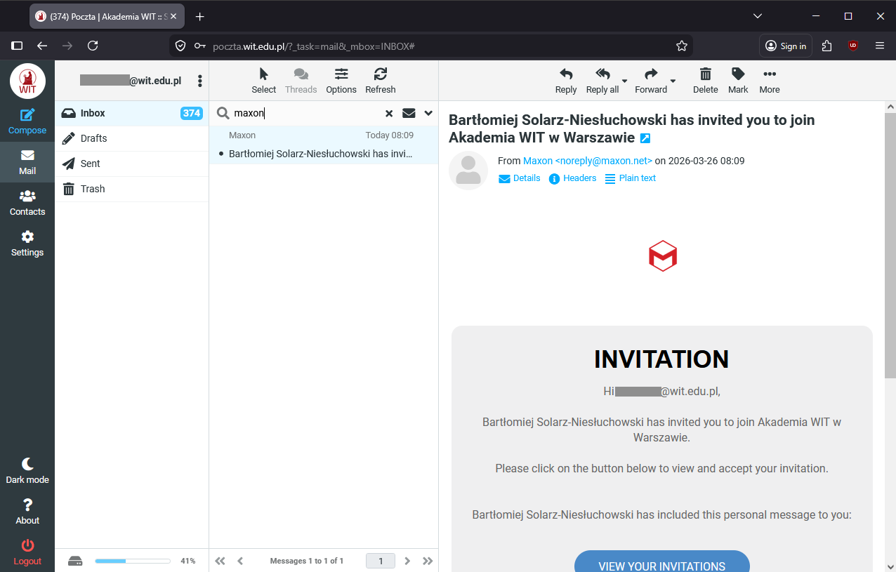
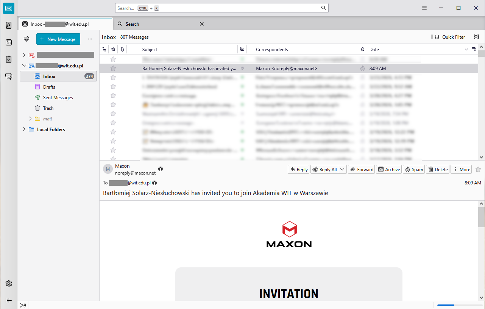
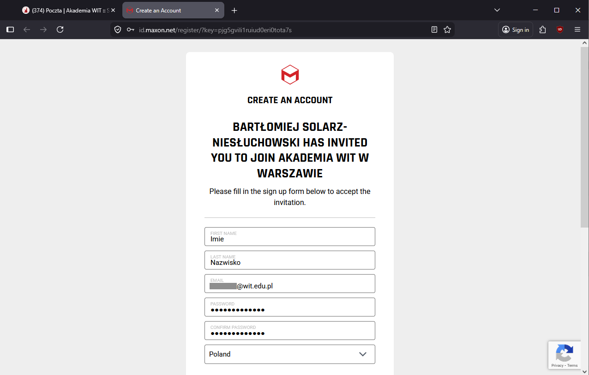
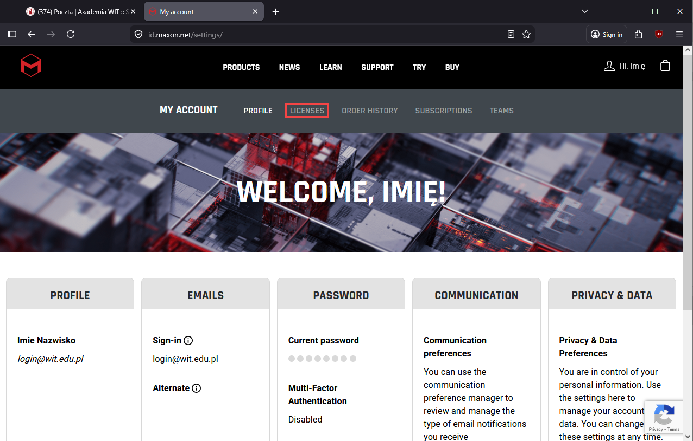
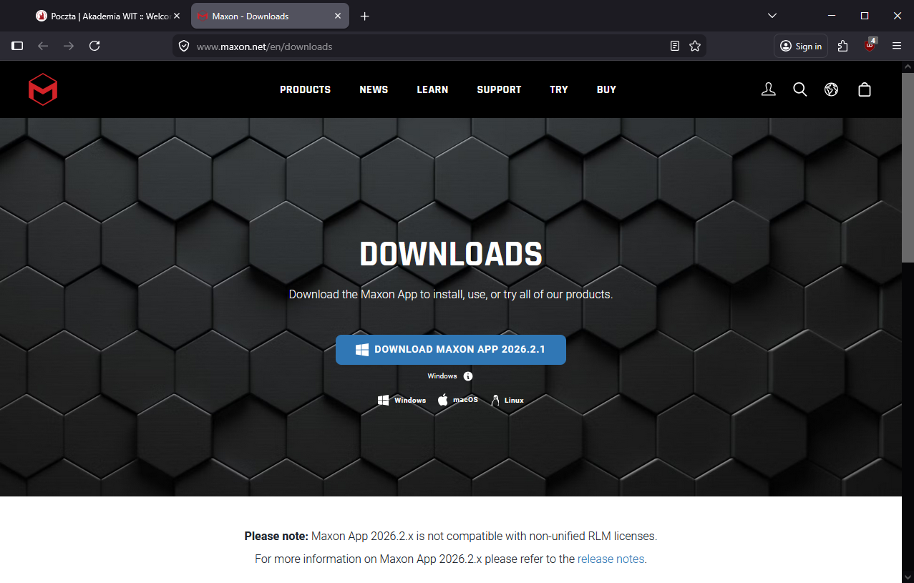
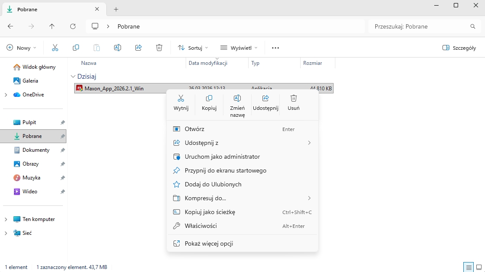
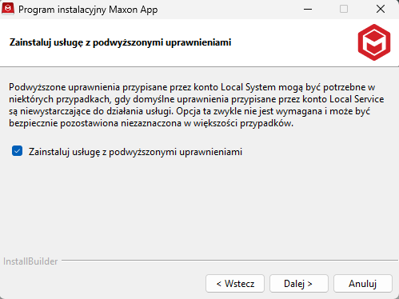
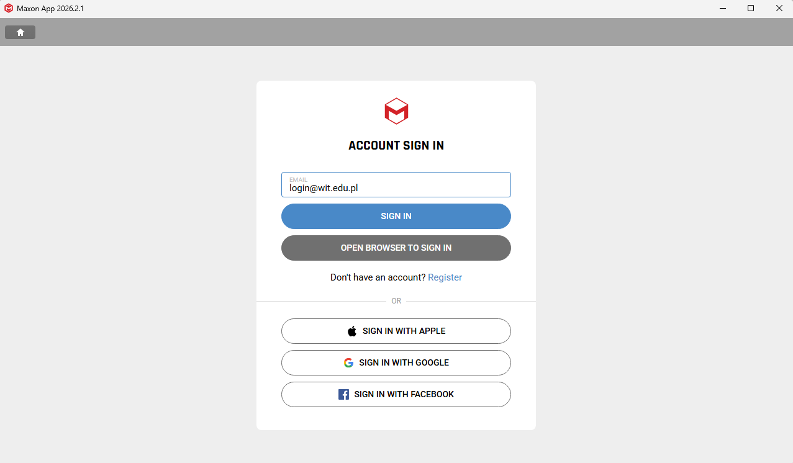
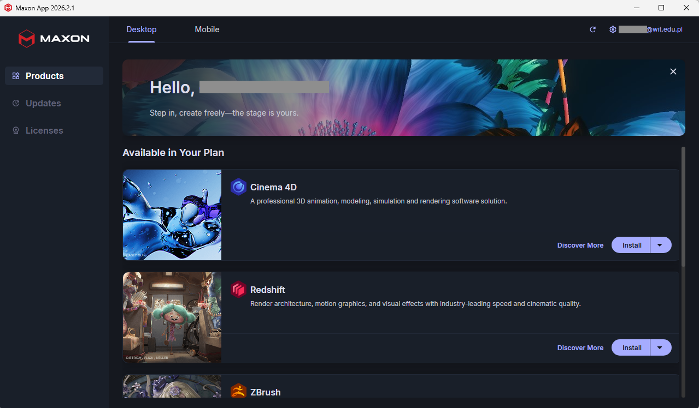

<!-- 

<h2>Dostęp do programów i usług Maxon</h2>
<p class="lead">
    Studenci Akademii WIT mają dostęp do programów
    Maxon używanych w realizacji programu.
    Poniższa instrukcja pokazuje tworzenia konta i dostępu do programów.</p>
    
-->


<div class="accordion-body instrukcja-tresc">
    <ol>
        <li>
            Wyszukaj w skrzynce uczelnianej poczty zaproszenie
            -
            Na przykład wpisując <strong>Maxon</strong> w wyszukiwanie
            <br>
            Następnie kliknij <strong>VIEW YOUR INVITATIONS</strong>
            <br>
            
            

        <li>
            Link z wiadomości otworzy stronę tworzenia konta.<br>
            Podaj:
            <ul>
                <li><strong>Imie i Nazwisko</strong> - Twoje Imie i Nazwisko</li>
                <li><strong>Adres E-mail</strong> - jeżeli nie jest automatycznie wstawiony, podaj adres, na który
                    przyszło zaproszenie</li>
                <li><strong>Hasło</strong> - ustaw swoje hasło; <strong>UWAGA</strong> - hasło do konta Maxon jest
                    niezależne od UBI</li>
            </ul>
            
        </li>

        <li>
            Twoje konto powinno być gotowe. Jeżeli tak jest, naciśnij zakładkę <strong>LICENSES</strong><br>
            
        </li>

        <li>
            Zjedź na dół strony licencji i kliknij <strong>Downloads</strong> <br>
             downloads" src="./licencje-downloads.png">
        </li>

        <li>
            Pobierz aplikację Maxon w wersji dla systemu operacyjnego, którego używasz<br>
            
        </li>
        <li>
            Gdy pobierze się instalator, uruchom go<br>
            
        </li>
        <li>
            Podczas instalacji, pojawi się pytanie, o podwyższone uprawnienia.
            <ul>
                <li>
                    Jeżeli instalujesz program na własnym komputerze, warto zaznaczyć tę opcję
                </li>
            </ul>
            <br>
            
        </li>
        <li>
            Po zainstalowaniu aplikacja uruchomi automatycznie, w przeciwnym przypadku, zrób to ręcznie.<br>
            Zaloguj się do swojego konta Maxon
            
        </li>
        <li>
            Po zalogowaniu masz dostęp do aplikacji Maxon.<br>
            Tutaj możesz instalować najnowsze i starsze wersje programów oraz zarządzać ich aktualizacjami.
            
        </li>
    </ol>
</div>